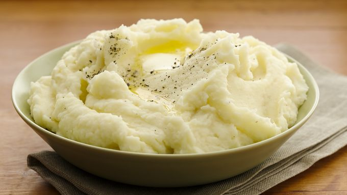

Mashed Potatos

Description
Easy simple and buttery smooth, these mashed potatos are to die for!
Ingredients
- 3 potatos
- 1 tbls of butter
Instructions
- peel the potatoes
- place the potatos in a pot with water and bring to a boil
- let the potatos boil for 20 minutes
- Mash the potatos together with the butter, salt to taste